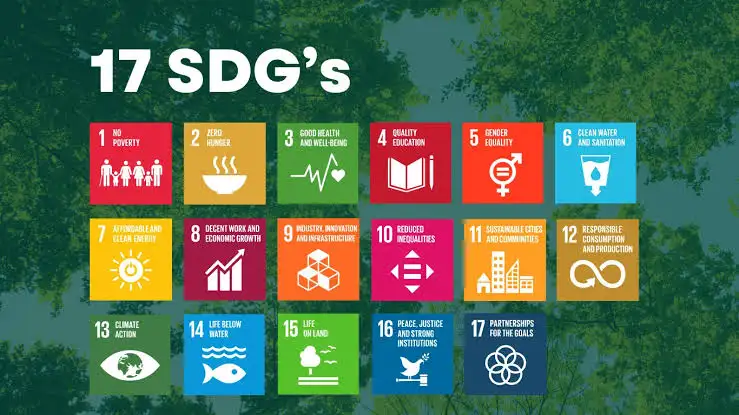
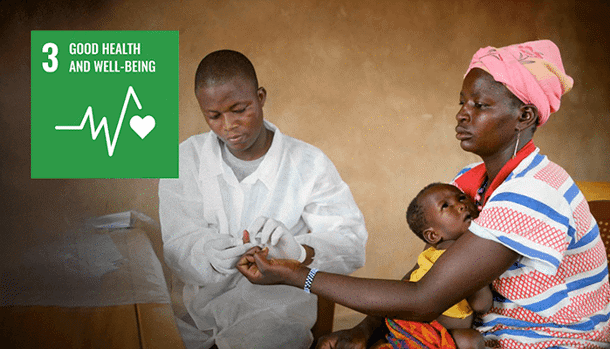
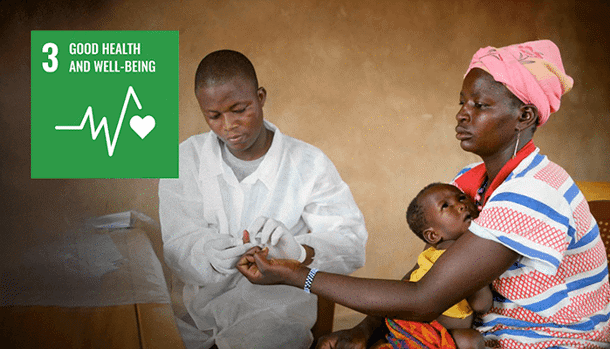

────୨ৎ────


────୨ৎ────
Perkenalkan nama saya Vicky dari kelas 93/12 dari SMP Santa Ursula Jakarta membuat website ini untuk mewujudkan kerja sama antar negara dan SDGs alias Sustainable Development Goals di Indonesia. Nah kenapa SDGs penting? SDGs menjadi kunci dalam membangun negara yang sejahtera dan meningkat kerja sama antar negara. Di website ini, saya menyajikan informasi, analisis dan solusi terhadap tantangan-tantangan yang berada di Indonesia. Kami sebagai warga Indonesia harus menunjukkan komitmennya dalam mendukung SDGs, maka Ayo mari kita bersama memahami peran Indonesia dalam mewujudkan SDGS. Selamat membaca!
Apa itu SDGs?SDGs merupakan singkatan dari Sustainable Development Goals yang dibuat oleh 193 negara yang terlibat dalam The United Nations. SDGs terdiri dari 17 tujuan utama untuk mengakhiri kemiskinan, melindungi planet ini dan menciptakan kesejahteraan dan kedamaian bagi semua negara. Tujuan-tujuan tersebut dirancang untuk memberi solusi terhadap tantangan global dan memiliki target untuk mencapainya pada tahun 2030. Negara-negara telah berkomitmen untuk memprioritaskan kemajuan bagi mereka yang paling tertinggal. Bagi mereka yang tidak bisa membiayai kehidupannya, yang terinfeksi AIDS dan yang didiskriminasi karena mereka merupakan wanita.  |
 

|
.png)
Menghapus kemiskinan dan memastikan semua orang bisa mendapatkan kebutuhan sehari-hari
Memastikan bahwa pangan dan gizi cukup
Menjamin kesehatan semua orang dan akses ke layanan kesehatan untuk semua orang
Pendidikan berkualitas untuk semuanya
Menghapus diskriminasi gender
Akses air yang bersih dan aman
Energi ramah lingkungan
Pertumbuhan ekonomi dan lapangan kerja yang luas
Infrastruktur yang kuat dan teknologi yang maju
Mengurangi ketimpangan
Kota yang kini dan aman
Penggunaan sumber daya secara bijak
Melawan perubahan iklim
Menjaga laut supaya tetap bersih
Melindungi dan memulihkan hutan
hukum yang adil
Kerja sama dunia untuk mencapai SDGs